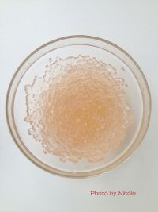

<style>
/* custom */
section[data-id="5"] {
    /*background-color: #3498db;*/
}
section[data-id="5"] .box1 {
    /*left: 84px; top: 48px;*/
}
section[data-id="5"] .box2 {
    /*left: 19px; top: 351px;*/
}
section[data-id="5"] .box3 {
    /*left: 25px; top: 420px;*/
}
</style>

<!-- 第五屏 -->
<voice-pig id="voice-5" text="part5:降温后的西米放入大碗中" onplay="" onplaying="" onstop="window.goNext()"></voice-pig>
<section class="page">
    <div class="box1 animated bounceInDown">
        
    </div>
    <div class="box2 animated bounceInUp">
        <i>5</i>
    </div>
    <div class="box3 animated bounceInLeft">
        <p>降温后的西米放入大碗中</p>
    </div>
</section>
